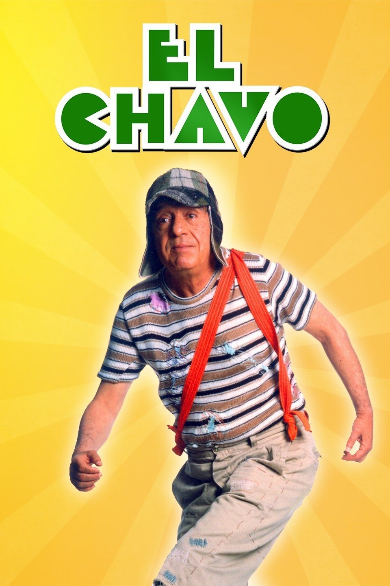

El Chavo del 8 |
||
|---|---|---|
|  | Sinopsis: (El Chavo, interpretado por un adulto) que vive en una vecindad de la Ciudad de México D.F., y con frecuencia se lo encuentra dentro de un barril situado en el patio de la vecindad. El programa explora, de manera cómica, los problemas que muchos niños de la calle experimentan a diario como el hambre, la tristeza y el no tener a alguien que cuide de ellos. El argumento pasaba por una serie de enredos y confusiones en que participan los personajes que creó el escritor Roberto Gómez Bolaños, Chespirito. |
Director:Roberto Gomez Bolaños Reparto:Roberto Gómez Bolaños, Carlos Villagrán, Ramón Valdés Año: 1972 Duracion:30 min cada episodio Pais:Mexico |
Criticas Profesionales:BetoMoviesPocas series me han hecho reír y emocionar (inclusive hasta llegar a las lágrimas) como "El Chavo del 8", ese huérfano que derrocha simpatía, picardía e inocencia en equitativas dosis. |
Trailer |
Obtener:AlquilarComprar |
Registrate/Iniciar Sesion